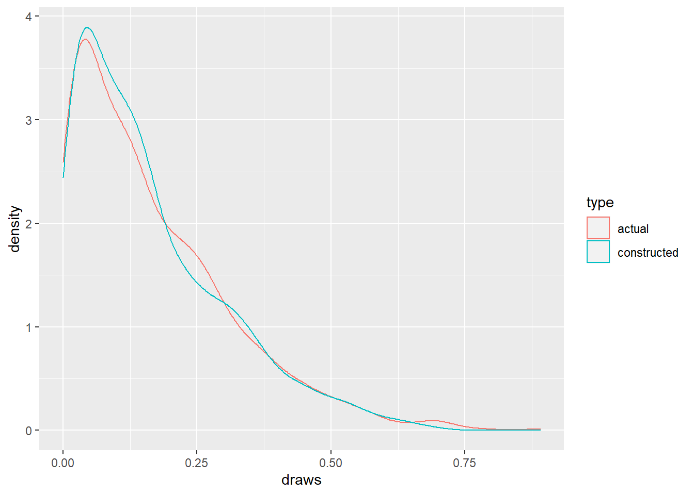
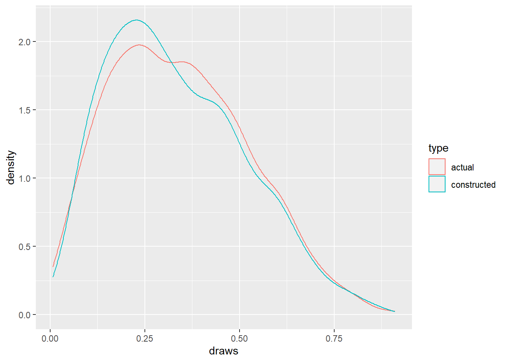
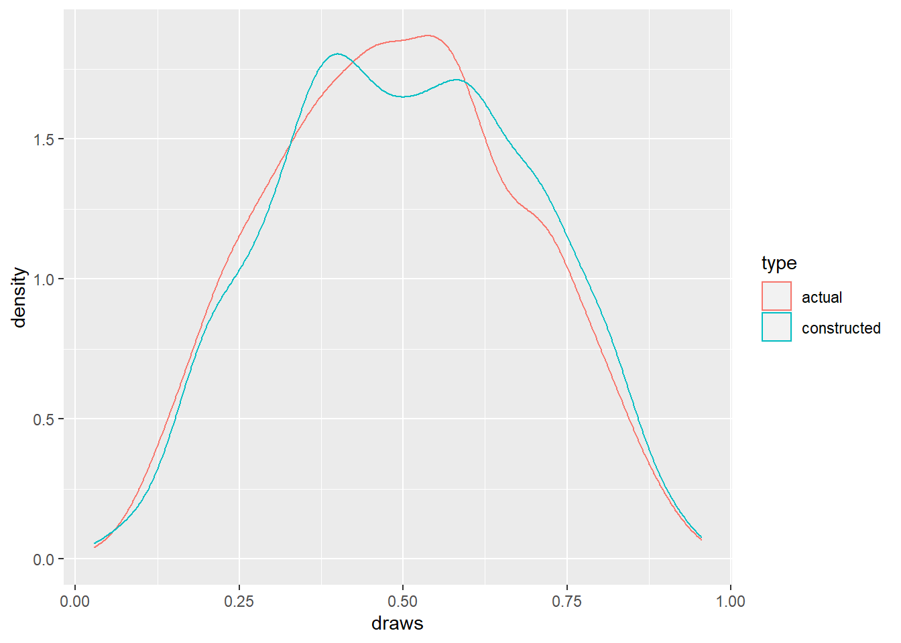
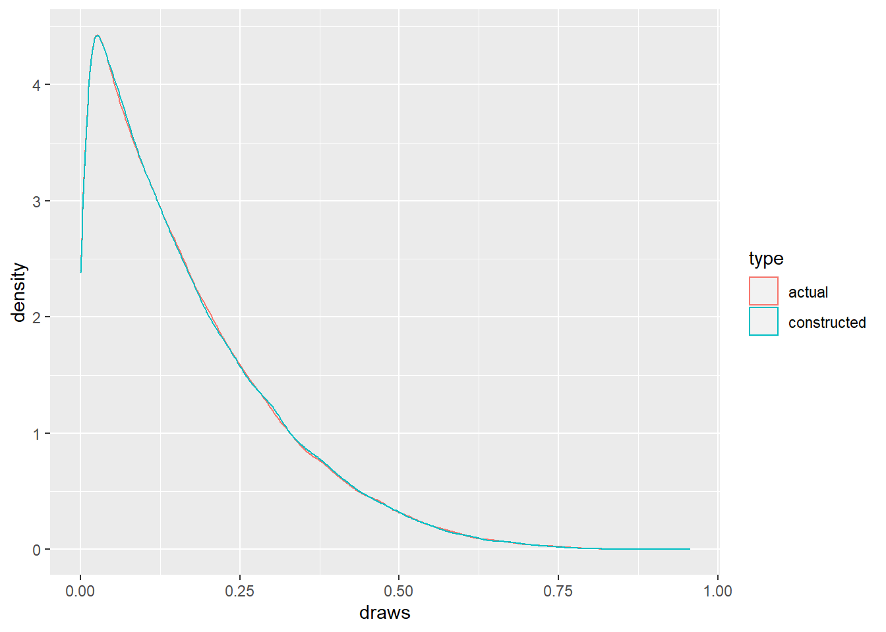
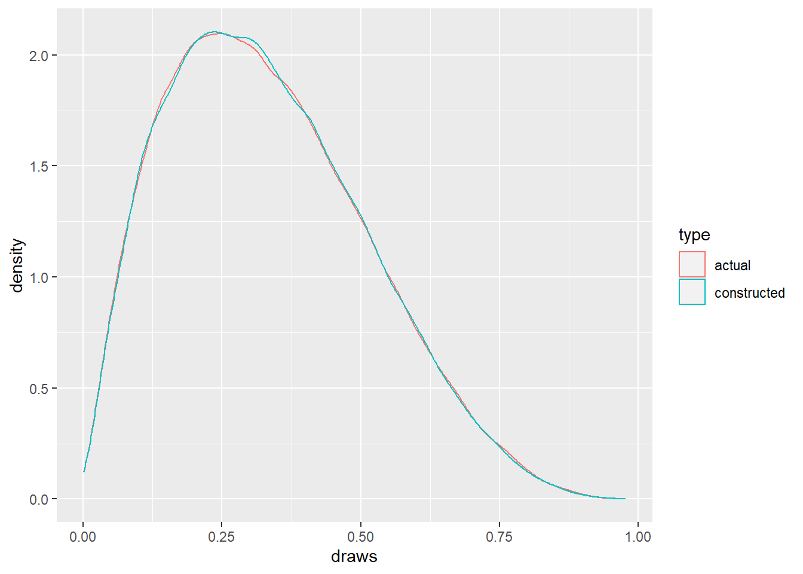
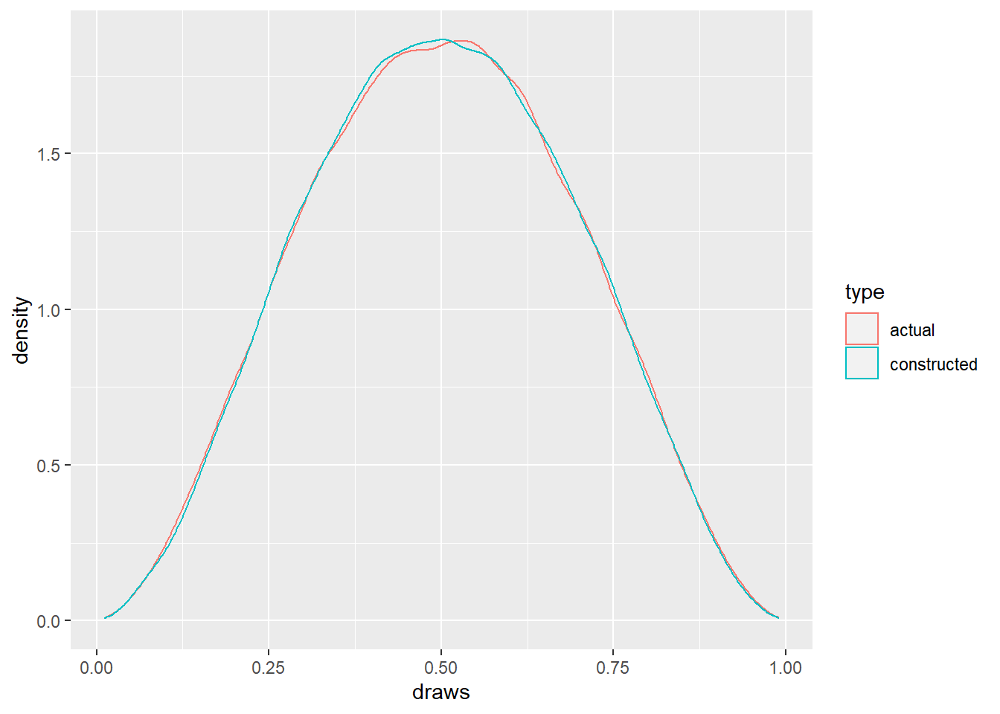

This post is a continuation of the post that constructs a Dirichlet distribution from Gamma distributed variables. I now provide an empirical example of this construction for a simple case. In all of the work that follows, Unless otherwise specified, the rate parameter for the Gamma distribution is 1.
I follow the steps below to do this:
- Generate data from a gamma distribution
- Apply the appropriate transformation to these
- Check the distribution of the transformed variables
- Compare against data generated from a Dirichlet distribution with appropriate parameters
Preliminaries
I write a function that generates IID draws from \(d\) different gamma distributions, all with rate parameter = 1. Note that this is purely a utility function with no sanity checks on the input. In the code below, the parameter \(d\) is implicit, in that it is the length of the vector of shape parameters, \(alpha\), which is being sent as an input (all the elements in the vector \(alpha\) must be \(>0\)).
#Function to generate n random draws of dimension from d different gamma distributions
mv_gamma <- function(rgamma, n, alpha)
{
# rgamma: the base r function to generate random draws from a univariate gamma distribution
# n: number of draws needed
# alpha: vector of shape parameters
# generate random draws for each dimension, then put them together into an array
# using sapply for this
mvg_draws <- sapply(alpha, function(x) rgamma(n, x))
#return this value
return(mvg_draws)
}I create another utility function to transform the output from the previous function to construct Dirichlet distributed variables.
#Function to construct dirichlet distributed variables from gamma distributed variables
construct_dirichlet <- function(mvg_draws)
{
# mvg_draws: output from the mv_gamma function. Typically an n x d matrix.
# Transform the columns of mvg_draws appropriately:
# Divide each row with its sum
const_dirichlet <- mvg_draws/rowSums(mvg_draws)
#return this value
return(const_dirichlet)
}Now, a utility function to compare the distrbution of the constructed and actual random variables. Note that I use the \(\texttt{cramer.test()}\) function from the cramer package to compare the multivariate draws.
compare_distributions <- function(const_dirichlet, actual_dirichlet) {
# const_dirichlet: n x d matrix containing the constructed dirichlet random draws
# actual_dirichlet: n x d matrix containing the actual dirichlet random draws
# get the cramer test result
compare <- cramer.test(const_dirichlet, actual_dirichlet)
# check the result of this hypothesis test
if(compare$result==0) {
cat('Unable to reject hypothesis of equal distributions')
} else {
cat('Hypothesis of equal distributions should not be accepted')
}
}Lastly, another utility function to compare (via plot) the distribution of the constructed and actual random variables. I use the \(\texttt{rdirichlet()}\) function from the MCMCpack package to generate draws from the dirichlet distribution.
#Function to plot densities of the constructed and actual dirichlet distribution
plot_compare <- function(const_dirichlet, actual_dirichlet, d)
{
# const_dirichlet: n x d matrix containing the constructed dirichlet random draws
# actual_dirichlet: n x d matrix containing the actual dirichlet random draws
# d: the column id/component of the draw needed from both constucted and actual for comparison
# Get the number of data points
n <- nrow(const_dirichlet)
# Get the draws in the dimension or column whose distribution need to be compared to the actual
dcol <- const_dirichlet[,d]
# Get the draws in the dimension or column, from the actual draws
dcol_actual <- actual_dirichlet[,d]
#create a data.frame of these values
plot_data <- data.frame(draws = c(dcol, dcol_actual), type = rep(c('constructed', 'actual')), each = n)
#plot this function
ggplot(data = plot_data, aes(x = draws, color = type)) + geom_density() + xlab('draws') + ylab('density')
}3 Dimensional Case
Let’s use the functions we just created. I follow the steps outlined in the introduction of this post.
library(cramer)## Loading required package: bootsuppressPackageStartupMessages(library(MCMCpack))
# number of draws
n <- 1000
# multivariate shapre parameter
alpha <- c(1,2,3)
# get 3D IID gamma density draws
set.seed(100)
mvg_draws <- mv_gamma(rgamma, n, alpha)
# get the dirichlet draws from construction
const_dirichlet <- construct_dirichlet(mvg_draws)
# get the dirichlet draws from the actual distribution
set.seed(100)
actual_dirichlet <- rdirichlet(n, alpha)
# check if the draws come from the same underlying distribution
compare_distributions(const_dirichlet, actual_dirichlet)## Unable to reject hypothesis of equal distributionsAs can be seen above, the null hypothesis that the underlying distributions are the same cannot be rejected. Let’s also look at the empirical densities of each of the columns of the constructed and actual dirichlet distribution draws.
Dimension 1: 
Dimension 2: 
Dimension 3: 
These density plots look somewhat similar. When we increase the number of draws generated from both methods, these plots almost overlap:
# number of draws
n <- 100000
# multivariate shapre parameter
alpha <- c(1,2,3)
# get 3D IID gamma density draws
set.seed(100)
mvg_draws <- mv_gamma(rgamma, n, alpha)
# get the dirichlet draws from construction
const_dirichlet <- construct_dirichlet(mvg_draws)
# get the dirichlet draws from the actual distribution
set.seed(100)
actual_dirichlet <- rdirichlet(n, alpha)Dimension 1: 
Dimension 2: 
Dimension 3: 
Comparing the draws for different values of \(d\) (i.e. different lengths of the \(alpha\) vector), is left as an exercise to the reader. The functions above can be re-used for different values of \(d\), but must be modified accordingly to include sanity checks for inappropriate input values and edge cases, via unit testing.